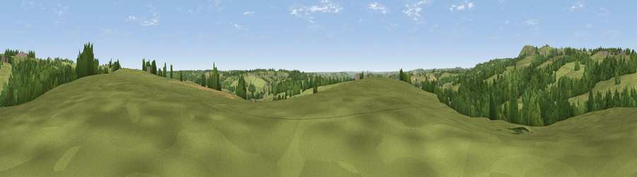

Viewpoint near Stanton
#31155 in England · top 52% of its area beats it · near Stanton · path 117 mWhere it is
The exact computed spot (SK 13175 44525). Click the marker for map links.
Public access: the nearest public right of way is about 117 m away — the final stretch may cross private land. Computed from Natural England's CRoW access layer and OpenStreetMap rights of way — not the legal definitive map. Always verify locally.
The view, rendered

A 360° render of this exact spot computed from the terrain model, tree cover and land cover — summer colours, afternoon light, calibrated against photographs of famous viewpoints. Real trees, hedges and buildings will differ in detail.
The panorama
Grey silhouette: terrain skyline in each direction (720 bearings, Earth curvature and refraction included). Dashed green: skyline with trees (+15 m) and buildings (+8 m) as obstacles. Blue strip: how far the ground is visible on each bearing.
Where the view opens
Wedge length = distance to the farthest visible ground on that bearing (vegetation-aware). Rings at 10, 25 and 50 km.
What fills the view
64% grassland · 29% woodland · 6% cropland ·
Angular shares of the visible panorama (visual magnitude), not map area. Landscape diversity 0.37 (0–1 Shannon).
Key numbers
More beautiful places nearby
The staircase of upgrades: each row has a higher view potential than everything closer. Driving times are estimates from straight-line distance, calibrated against real road routing — check an actual route before setting out.
| Place | Direction | Drive | Score |
|---|---|---|---|
| Viewpoint near Wootton | WNW · 3 km | ~7 min | 66.1 |
| Viewpoint near Wootton | WNW · 3 km | ~8 min | 74.4 |
| Viewpoint near Wootton | WNW · 4 km | ~10 min | 74.8 |
| Tissington Hill | NNE · 8 km | ~17 min | 75.5 |
| Viewpoint near Mow Cop | WNW · 30 km | ~47 min | 78.9 |
| Viewpoint near Mow Cop | WNW · 30 km | ~47 min | 80.2 |
| Viewpoint near Little Wenlock | SW · 61 km | ~84 min | 84.2 |
| The Wrekin | SW · 62 km | ~85 min | 85.0 |
52.99789, -1.80515 · source: screening · position refined by local search. Computed location — check access rights before visiting.